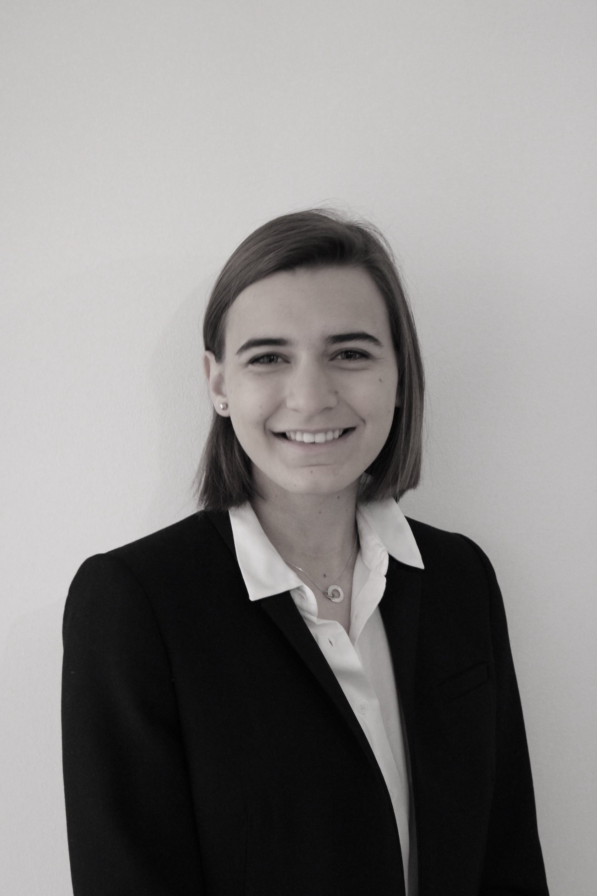

Alternante chargée de marketing chez Clearwage; Start-up lyonnaise dans le domaine des ressources humaines.
Ma mission principale est de mettre en place une stratégie de marketing de contenu afin de soutenir l’activité commerciale.
Depuis mon arrivée en septembre, une trentaine de traveaux ont étés rendus (étude de machée, benchmark, mise à jour du blog...)
Mes Informations
Mon adresse e-mail | Mon numéro de téléphone | Permis BÀ 21 ans, je suis étudiante en alternance à l'ESDES Business School, en 3ème année du programme Bachelor, spécialisée en Marketing et Communication Digitale
En septembre 2021 je m'envolerais pour une nouvelle aventure. Durant 6 mois je vivrais sur l'île de Malte afin de perfectionner mon anglais et réaliser une expérience humanitaire auprès d'une association maltaise.